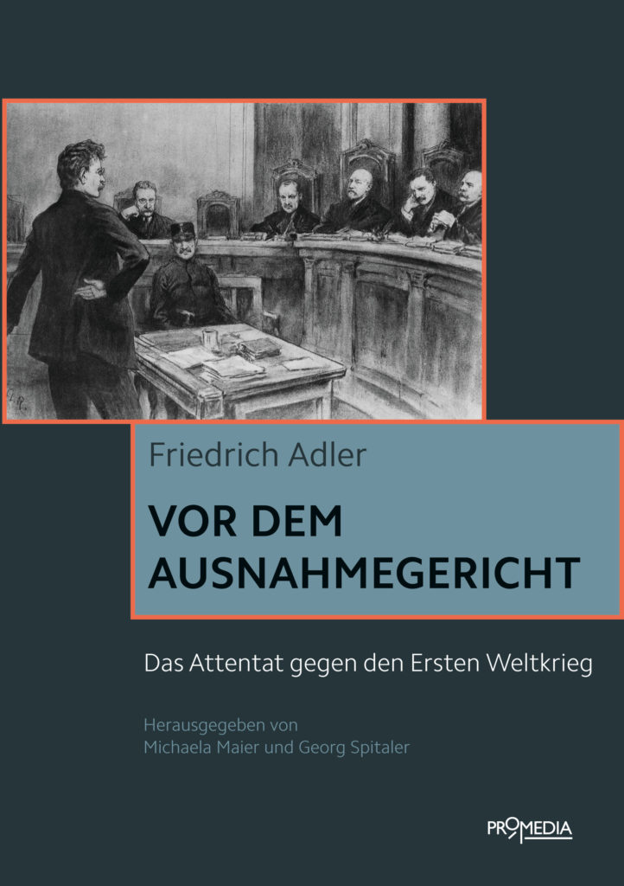
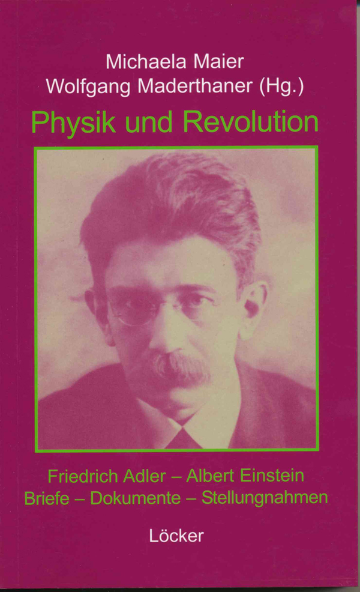
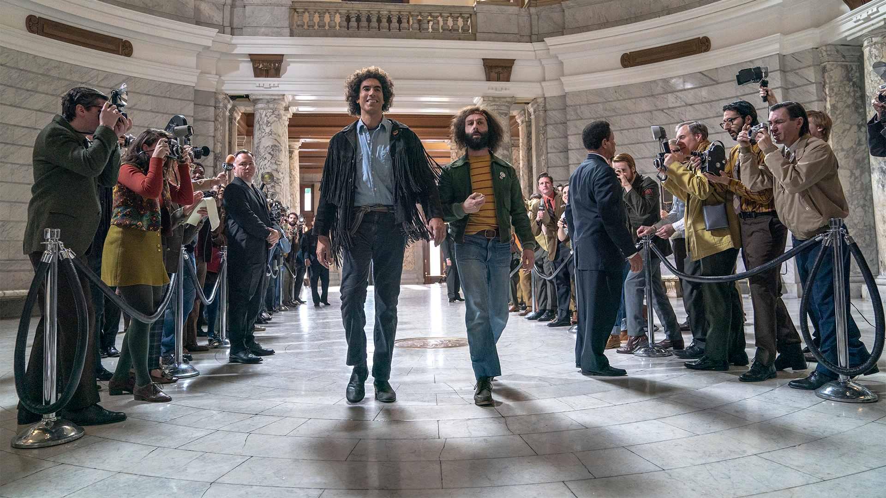
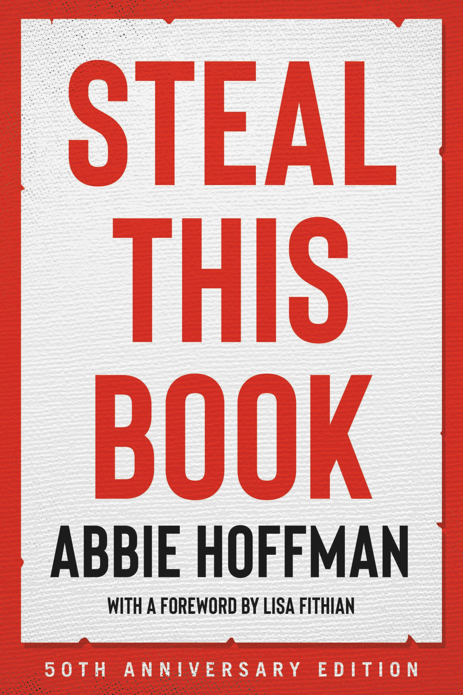
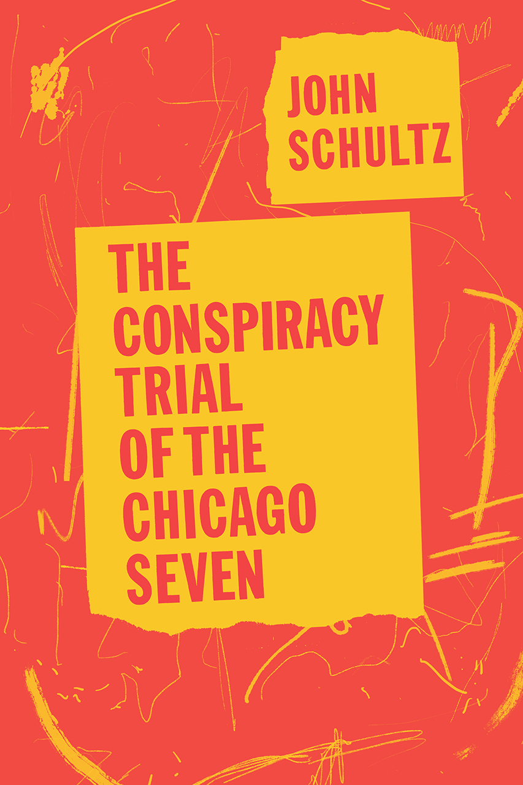
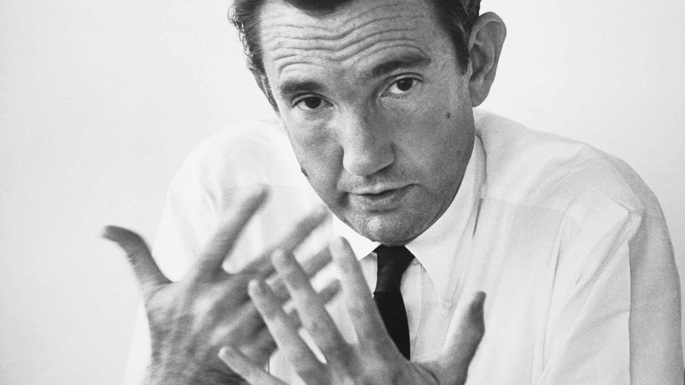
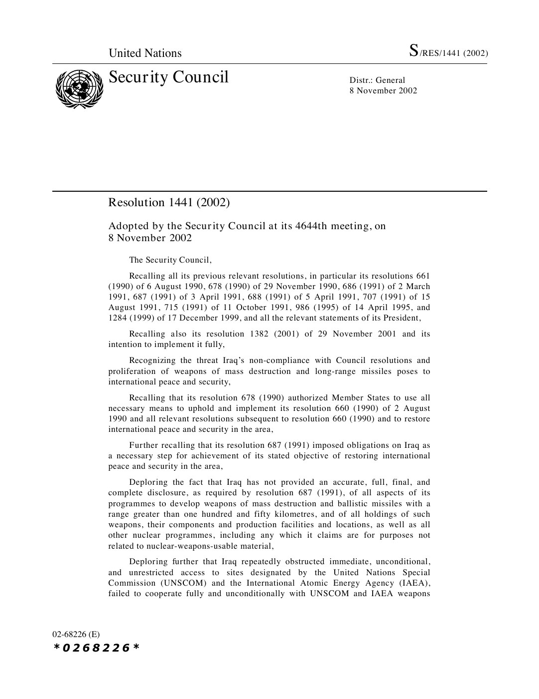
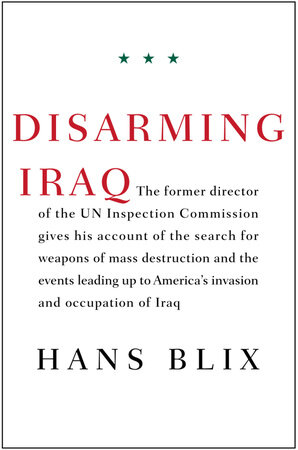

36:55 · 11 OPERE
La dignità contro il potere.
Il filo del discorso
Il contributo cerca esempi storici di una dignità personale capace di opporsi al potere. Socrate introduce il valore della cultura come difesa; la prima vicenda riguarda Friedrich Adler, ricordato per avere sostenuto la candidatura di Einstein a una posizione universitaria cui concorreva anche lui. Il relatore distingue questo gesto dall’assassinio politico per cui Adler divenne noto e presenta alcuni libri sulla sua storia. La seconda vicenda è quella di Ramsey Clark e del processo seguito alle proteste contro la convention democratica di Chicago del 1968. La sua disponibilità a testimoniare è proposta come scelta morale contro la convenienza, ma la scheda precisa che la deposizione fu esclusa dalla giuria e che il successivo annullamento delle condanne ebbe più ragioni. Mark Felt e il Watergate aprono un altro caso di informazione sottratta al segreto del potere. La parte finale presenta Hans Blix, le ispezioni in Iraq e la necessità di riferire ciò che è stato effettivamente trovato, distinguendo la mancata scoperta di armi dalle questioni ancora irrisolte sul disarmo. Il relatore collega questi esempi alla propria critica del presente, di Assange detenuto e della gestione sanitaria. La conclusione contrappone quei modelli a figure contemporanee attraverso giudizi e allusioni che restano attribuiti, senza trasformare titoli di articoli, immagini dei volti o analogie in prove di colpe individuali.
I libri nel discorso

The Empty Campus
Copertina: Lulu · edizione inglese di riferimento
Immagine associata all’ISBN di riferimento e controllata visivamente; edizione e traduzione non identificate come quelle citate o lette nel video.
Il relatore richiama il proprio libro The Empty Campus.
Passaggio 1:54 ↗ · Fonti e libro ↗Gavrilo Princips Bekenntnisse. Ein geschichtlicher Beitrag zur Vorgeschichte des Attentates von Sarajevo
Identificazione probabile
Frontespizio: Princip e Pappenheim, Vienna 1926: Frontespizio dell’edizione R. Lechner & Sohn, Vienna, 1926, 32 pagine; colloqui del febbraio–giugno 1916. Non è una copertina esterna.
Frontespizio dalla copia digitalizzata dell’Università del Michigan, disponibile su Google Books. Titolo principale leggibile; i dati minuti sono verificati sul record bibliografico. Copertina esterna e riproduzione ad alta risoluzione restano da reperire.
Pappenheim e libro dei colloqui con Princip in prigionia: probabile pubblicazione 1926, titolo non pronunciato.
Passaggio 4:35 ↗ · Fonti e libro ↗
Vor dem Ausnahmegericht. Das Attentat gegen den Ersten Weltkrieg
Copertina: Promedia, Vienna, 2016, 248 pagine, a cura di Michaela Maier e Georg Spitaler. Documentazione del processo del 18–19 maggio 1917.
Immagine autentica dell’opera, controllata visivamente; l’edizione di riferimento non è attribuita al filmato.
Vor dem Ausnahmegericht riconoscibile nel parlato e spiegato come davanti al tribunale straordinario.
Passaggio 5:39 ↗ · Fonti e libro ↗
Physik und Revolution. Friedrich Adler – Albert Einstein. Briefe, Dokumente, Stellungnahmen
Copertina: Löcker, Vienna, 2006. Raccolta curata da Michaela Maier e Wolfgang Maderthaner; edizione tedesca di riferimento.
Immagine autentica dell’opera, controllata visivamente; l’edizione di riferimento non è attribuita al filmato.
Michaela Maier e Fisica e rivoluzione riconoscibili; titolo completo e secondo curatore verificati nell’archivio VGA.
Passaggio 5:51 ↗ · Fonti e libro ↗
Il processo ai Chicago 7 (The Trial of the Chicago 7)
Identificazione probabile
Fotografia del film: Il processo ai Chicago 7: Fotografia ufficiale Amblin del film scritto e diretto da Aaron Sorkin, 2020. Non è una copertina di libro né una fotografia giudiziaria del 1969.
Scena del film del 2020 con protagonisti e fotografi in un corridoio monumentale. L’identificazione del film ricordato resta probabile; la ricostruzione cinematografica non sostituisce i verbali storici.
Recente film di Hollywood sulla vicenda di Clark e sul processo: probabile The Trial of the Chicago 7 del 2020, titolo non pronunciato.
Passaggio 11:49 ↗ · Fonti e libro ↗
Steal This Book
Copertina: Hachette Go, edizione del cinquantenario, 14 settembre 2021, 352 pagine, prefazione di Lisa Fithian; opera originale 1971.
Copertina autentica rossa e bianca dell’edizione del cinquantenario, con titolo, Abbie Hoffman, Lisa Fithian e dicitura 50th Anniversary Edition. È un’edizione successiva di riferimento, non quella necessariamente mostrata nel video.
Abbie Hoffman e Steal This Book espliciti.
Passaggio 13:46 ↗ · Fonti e libro ↗
The Conspiracy Trial of the Chicago Seven
Identificazione probabile
Copertina: University of Chicago Press, 2020, 416 pagine, versione riveduta con introduzione di Carl Oglesby. Titolo precedente The Chicago Conspiracy Trial; prima versione Motion Will Be Denied, 1972.
Copertina autentica rossa e gialla dell’edizione 2020: autore e titolo leggibili. Il titolo completo non è pronunciato dal relatore; l’identificazione resta probabile. Non è il volume a fumetti mostrato prima e non si confonde John Schultz con il pubblico ministero Richard Schultz.
Schultz e testo sul processo: identificazione probabile dell’opera di John Schultz, senza confonderla con il fumetto mostrato prima.
Passaggio 16:15 ↗ · Fonti e libro ↗
In Front of Your Nose
Identificazione probabile
Copertina: David R. Godine, Nonpareil · Collected Essays, Journalism and Letters, vol. 4
Copertina della raccolta In Front of Your Nose, 1945–1950, quarto volume dei Collected Essays, Journalism and Letters, curato da Sonia Orwell e Ian Angus. Il saggio omonimo è incluso a pagina 122: l’immagine rappresenta la raccolta, non una pubblicazione autonoma del saggio. Nessuna edizione attribuita al video.
Orwell e difficoltà di vedere ciò che abbiamo davanti: probabile In Front of Your Nose, titolo non pronunciato.
Passaggio 21:49 ↗ · Fonti e libro ↗
Citizen Clark… A Life of Principle
Fotografia del documentario: Citizen Clark: Documentario statunitense, Joseph C. Stillman, 95 minuti; presentato all’UNAFF nel 2019. Fotografia promozionale del documentario, non copertina libraria.
Ritratto in bianco e nero di Ramsey Clark, fornito come immagine del film dalla sezione stampa UNAFF. Non è una scena ricostruita del processo di Chicago e il numero 2019 indica la presentazione al festival.
Citizen Clark, A Life of Principle esplicito e tradotto dal relatore.
Passaggio 24:16 ↗ · Fonti e libro ↗
Risoluzione 1441 (2002) del Consiglio di Sicurezza delle Nazioni Unite
Prima pagina della risoluzione ONU 1441 (2002): Prima pagina della risoluzione S/RES/1441 (2002), adottata l’8 novembre 2002 nella 4644ª riunione; versione inglese ufficiale.
Prima pagina integrale del PDF ONU/UNMOVIC, con emblema, data, numero di risoluzione e inizio del testo. Non è una copertina libraria né l’atto che nominò Blix nel 2000.
Risoluzione ONU 1441 esplicita nel contesto delle ispezioni in Iraq; data precisata in 2002.
Passaggio 29:08 ↗ · Fonti e libro ↗
Disarming Iraq
Copertina: Pantheon, edizione digitale del 9 marzo 2004, 304 pagine secondo il catalogo editoriale. ISBN dell’ebook raffigurato, distinto dagli ISBN delle edizioni cartacee.
Copertina autentica bianca, titolo rosso e autore nero, acquisita dal collegamento cover della pagina ufficiale. Il numero di pagine è quello dell’edizione digitale catalogata; non viene imposto ai cartacei con diversa paginazione.
Hans Blix e Disarming Iraq espliciti.
Passaggio 33:43 ↗ · Fonti e libro ↗